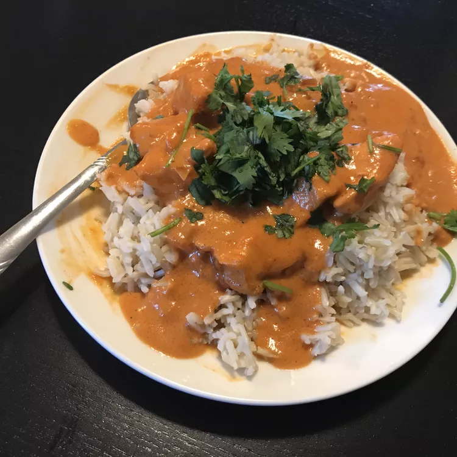

Butter Chicken Recipe

Description
Ingredients
- 1 cup butter, divided
- 1 onion, minced
- 1 tablespoon minced garlic
- 1 (15 ounce) can tomato sauce
- 3 cups heavy cream
- 2 teaspoons salt
- 1 teaspoon cayenne pepper
- 1 teaspoon garam masala
- 1 1/2 pounds skinless, boneless chicken breast, cut bite sized
- 2 tablespoons vegetable oil
- 2 tablespoons tandoori masala
Steps
- preheat oven to 375 degrees F
- melt half of total butter in skillet over medium heat
- stir in onion and garlic, and cook until onion caramelizes (about 15 minutes)
- meanwhile, combine cream, tomato sauce, rest of butter, salt, cayenne pepper, and garam masala in a saucepan over medium-high heat
- bring to a simmer
- reduce heat to medium low, cover, and simmer, stirring occasionally, for 30 minutes. stir in caramelized onions
- while simmering sauce, toss chicken with veg oil until coated. season with tandoori masala and spread onto baking sheet
- bake chicken in preheated oven unti8l no longer pink in center (12 minutes ish)
- add cooked chicken to the sauece and simmer for 5 minutes before serving